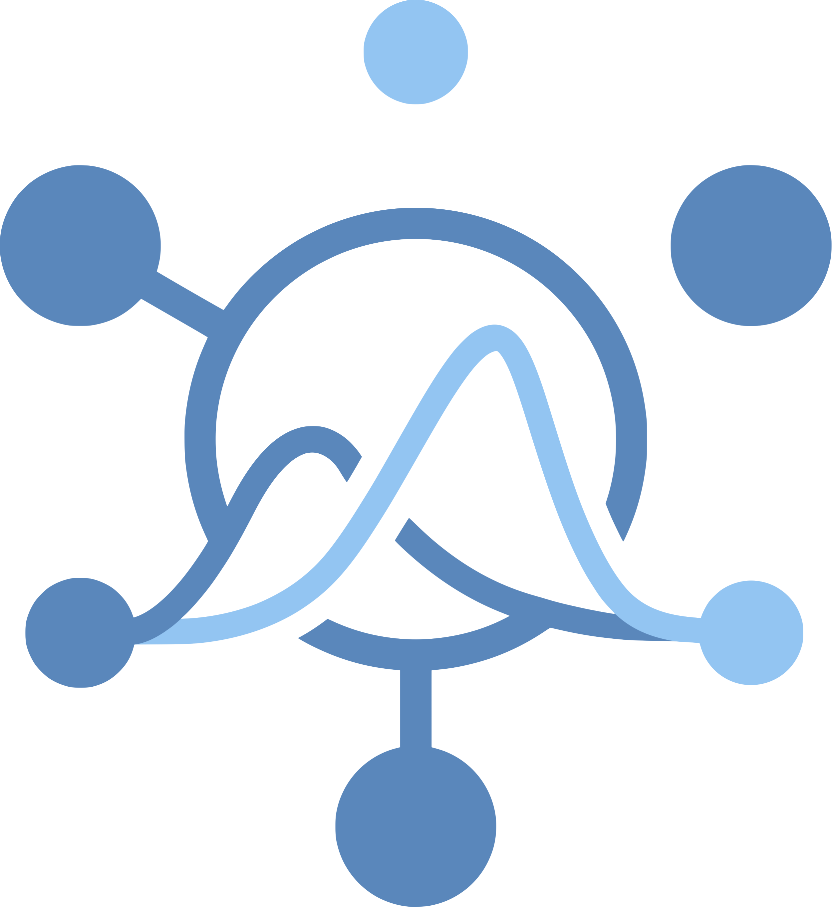

The Hubverse: Streamlining Collaborative Infectious Disease Modeling
RSECon26 · Sheffield
![ORCID iD]()
9 September 2026

Background
❌ Where we started
Infectious disease modeling scaled rapidly through COVID-19…
- …but early on the landscape was fragmented:
- Each group used its own data structures
- Results were hard to integrate or compare
- Modelers and decision-makers not always aligned
“Comparing the accuracy of forecasting applications is difficult because forecasting methods, forecast outcomes, and reported validation metrics varied widely.”
✨ The promise of modeling hubs
Modeling hubs coordinate collaborative forecasting:
Provide centralised location for effort coordination
Define data standards and modeling targets
Improve transparency and comparability
Aggregate forecasts enabling ensembles
Facilitate timely public health decision-making
“Collaborative Hubs: Making the Most of Predictive Epidemic Modeling”, American Journal of Public Health Reich, et al. 2022
🕰️ Project origins
- Pre-COVID: Forecasting code base existed for CDC influenza hubs
- During COVID: That code was reused for new COVID-19 hubs + demand internationally (e.g. Europe) for similar setups
- ❗ Problem: Each hub required manual editing of source code
{kind=link}
🌐 Enter the hubverse
An open-source software ecosystem to power modeling hubs:
- GitHub repositories for centralising hub activity
- Data standards for infectious disease modeling data
- Schema-driven configuration for modeling tasks + hub setup
- Modular tools for hub administration, data validation, access, evaluation, ensembling and communication
📄 A software platform for collaborative infectious disease modelling (2026), Nature Health, Consortium of Infectious Disease Modeling Hubs et al. https://doi.org/10.1038/s44360-026-00145-7
Anatomy of a hub
🏗️ What a hub actually is
{kind=link}
- Modeling teams submit model output
- Submissions validated against
tasks.json - Accepted output merged into the hub
Everything downstream, ensembles, visualisations, evaluations, comes for free once the data are standardised.
Figure 1 from the hubverse paper (preprint, CC BY 4.0)
☑️ A shared data standard
Modeling hubs are built around a shared data standard:
- Structured hub layout: consistent file system for organizing hub materials
- Standard model output format: for file content and naming
- Modeling task definition: what’s predicted, by when, for where, in what form
✅ Enable comparability, validation and integration
🦠 Meet the hub: CDC FluSight
The hub we’ll follow: CDC FluSight
https://github.com/cdcepi/FluSight-forecast-hub
{kind=link}
{kind=link}
📁 Where model output lives
model-output/<model_id>/<round_id>-<model_id>.csv · one directory per model, one file per round
{kind=link}
Configuring FluSight
⚙️ Config-driven hub setup
Hub administrators configure hubs with structured JSON config files:
admin.json: hub-level metadatatasks.json: the scientific question: what to predict, when, and howmodel-metadata-schema.json: what modelers must tell you about their modeltarget-data.json: what observed data should look like
All validated against a versioned JSON schema. The config is the contract between administrators, modelers and tooling.
🗂️ admin.json: the hub’s identity card
{
"schema_version": ".../schemas/main/v6.0.0/admin-schema.json",
"name": "US CDC FluSight",
"maintainer": "US CDC",
"contact": {
"name": "Rebecca Borchering",
"email": "xhq2@cdc.gov"
},
"repository": {
"host": "github",
"owner": "cdcepi",
"name": "FluSight-forecast-hub"
},
"file_format": ["csv", "parquet"],
"timezone": "US/Eastern",
"cloud": {
"enabled": true,
"host": {
"name": "aws",
"storage_service": "s3",
"storage_location": "cdcepi-flusight-forecast-hub"
}
}
}🎯 Inside tasks.json
tasks.json
└── rounds[] # a submission cycle
├── round_id_from_variable: true # round IDs live in the data...
├── round_id: "reference_date" # ...in this task ID
├── submissions_due # window, relative to the round
└── model_tasks[] # groups of related predictions
├── task_ids{} # the DIMENSIONS of a prediction
├── output_type{} # the FORM the prediction takes
└── target_metadata[] # what the target meansA hub can have many rounds, each with many model tasks, so a single hub can ask for several different kinds of prediction at once.
🏷️ Task IDs: the dimensions of a prediction
"task_ids": {
"reference_date": {
"required": null,
"optional": ["2023-10-07", "2023-10-14", "..."]
},
"target": {
"required": null,
"optional": ["wk inc flu hosp"]
},
"horizon": {
"required": null,
"optional": [-1, 0, 1, 2, 3]
},
"location": {
"required": null,
"optional": ["US", "01", "02", "..."]
},
"target_end_date": {
"required": null,
"optional": ["2023-09-23", "2023-09-30", "..."]
}
}reference_date + horizon × 1 week = target_end_date
🎯 Targets carry more than a name
target is a special task ID: every value in the column gets its own metadata entry
Descriptive
target_name,description: for humans, and for axis labels
Quantitative
target_units: what is being countedis_step_ahead,time_unit: one step in a sequencetarget_type: its statistical type (continuous,ordinal,date, …)
target_type constrains how a prediction of this target can be expressed. Which is exactly what an output type is…
📐 Output types: how a prediction is expressed
output_type |
output_type_id |
value |
|---|---|---|
mean |
(none) | mean of the predictive distribution |
median |
(none) | median of the predictive distribution |
quantile |
a probability level, e.g. 0.75 |
the value at that quantile |
cdf |
a possible value, e.g. 500 |
P(outcome ≤ 500) |
pmf |
a possible category, e.g. "increase" |
P(outcome = "increase") |
sample |
a sample index, e.g. "s3" |
one draw from the distribution |
🎛️ …and how a hub configures them
"output_type": {
"quantile": {
"output_type_id": {
"required": [0.01, 0.025, "...", 0.975, 0.99]
},
"is_required": true,
"value": { "type": "double", "minimum": 0 }
},
"sample": {
"output_type_id_params": {
"compound_taskid_set": ["reference_date", "location", "target"],
"min_samples_per_task": 100,
"max_samples_per_task": 100
},
"is_required": false,
"value": { "type": "integer", "minimum": 0 }
}
}🔍 Configured model output in the wild
Real FluSight rows from round 2026-01-10, national. task IDs · output type · value
reference_date horizon target target_end_date location output_type output_type_id value 2026-01-10 1 wk inc flu hosp 2026-01-17 US quantile 0.01 18429 2026-01-10 1 wk inc flu hosp 2026-01-17 US quantile 0.025 20177 2026-01-10 1 wk inc flu hosp 2026-01-17 US quantile 0.05 21981 … 2026-01-10 1 wk inc flu hosp 2026-01-17 US quantile 0.5 38936 … 2026-01-10 1 wk inc flu hosp 2026-01-17 US quantile 0.975 61292 2026-01-10 1 wk inc flu hosp 2026-01-17 US quantile 0.99 68125 2026-01-10 0 wk inc flu hosp 2026-01-10 US sample us_s1 36268 2026-01-10 1 wk inc flu hosp 2026-01-17 US sample us_s1 36397 2026-01-10 2 wk inc flu hosp 2026-01-24 US sample us_s1 33669 2026-01-10 3 wk inc flu hosp 2026-01-31 US sample us_s1 33727 2026-01-10 1 wk flu hosp rate change 2026-01-17 US pmf large_decrease 0.114 2026-01-10 1 wk flu hosp rate change 2026-01-17 US pmf decrease 0.244 2026-01-10 1 wk flu hosp rate change 2026-01-17 US pmf stable 0.158 2026-01-10 1 wk flu hosp rate change 2026-01-17 US pmf increase 0.231 2026-01-10 1 wk flu hosp rate change 2026-01-17 US pmf large_increase 0.253
🏷️ Hubs collect metadata about the models too
model-metadata-schema.json sets out what each team must document about their model
- One file per model in
model-metadata/, validated on every PR - The hubverse ships a schema template, hubs adapt it
Provenance for every prediction, and a natural basis for model cards.
team_name: "UMass-Amherst"
model_abbr: "flusion"
model_version: "1.1"
model_contributors:
- name: "Evan Ray"
affiliation: "UMass Amherst"
license: "CC-BY-4.0"
data_inputs: "NHSN, FluSurv-NET and ILINet."
methods: "Ensemble of statistical and machine
learning time series models."
designated_model: trueBeyond the data standard
🔁 Automating everything we can
GitHub Actions do the operational work:
- ✅ PR-level model output validation
- ✅ Hub configuration validation
- ☁️ Cloud hub data syncing
- 📊 Dashboard builds
All actions live in hubverse-actions and install with hubCI::use_hub_github_action()
☁️ Cloud storage and access
Validated hub data is mirrored to a public S3 bucket
- Opened directly as an Arrow dataset: no cloning, no full download
- Query-able via 📦
hubData(R) and 📦hubdata(Python) - Turns a hub into an open data resource, not just a repository
Enable it with a few lines in admin.json. The hubverse provisions the bucket.
📊 Dashboards & communication
- Built with Quarto so easily customisable via Quarto configuration
- Deployed as a fully static site, no backend required
- Powered by JSON data prepared via GitHub workflows
- Interactive UI built with client-side JavaScript (fast!)
- New instances set up by copying/configuring the
hub-dashboard-template
{kind=link}
👥 Hubverse roles and their tooling
🦠 FluSight in operation
✅ Model output validation with hubValidations
Submitted by pull request, validated by GitHub Actions, reported back on the PR
{kind=link}
── hub-config ──── ✔ [valid_config]: All hub config files are valid. ── team1-goodmodel/2022-10-22-team1-goodmodel.csv ──── ✔ [file_name]: File name is valid. ✔ [metadata_exists]: Metadata file exists. ✖ [submission_time]: Submission time must be within accepted submission window for round. Current time "2026-08-12 18:55:10 UTC" is outside window 2022-10-16 EDT--2022-10-23 23:59:59 EDT. ✔ [colnames]: Column names are consistent with expected round task IDs and std column names. ✔ [req_vals]: Required task ID/output type/output type ID combinations all present. ✔ [value_col_non_desc]: Quantile or cdf values increase when ordered by `output_type_id`. … 21 further checks
a1b2c3d🔎 What actually gets checked
Standard checks, generated from tasks.json
- 📄 File: name, location, format, submission window
- 🧱 Structure: columns, types, duplicates, round ID
- 🎯 Content: valid task ID combinations, required tasks present, values in bounds
- 📐 Output-type specific: quantiles don’t cross,
pmfsums to 1, sample counts - 🏷️ Model metadata and 🎯 target data: each with their own checks
Hub-specific checks in hub-config/validations.yml
default:
validate_model_data:
horizon_timediff:
fn: "opt_check_tbl_horizon_timediff"
pkg: "hubValidations"
args:
t0_colname: "reference_date"
t1_colname: "target_end_date"- Opt-in checks shipped with
hubValidations - Or the hub’s own R functions, in
src/validations/R
create_custom_check() scaffolds a custom check: right structure, return classes and conventions, ready to fill in.
📂 Accessing model output via hubData
Connect to Arrow dataset of forecast submissions
hub_connection
9 columns
reference_date: date32[day]
target: string
horizon: int32
target_end_date: date32[day]
location: string
output_type: string
output_type_id: string
value: double
model_id: stringQuery and collect data
# Filter for one model and forecast date using dplyr
library(dplyr)
hub_con |>
filter(
model_id == "CADPH-FluCAT_Ensemble",
target_end_date == "2023-10-28"
) |>
collect_hub()# A tibble: 92 × 9
model_id reference_date target horizon target_end_date location output_type
* <chr> <date> <chr> <int> <date> <chr> <chr>
1 CADPH-FluC… 2023-10-14 wk in… 2 2023-10-28 06 quantile
2 CADPH-FluC… 2023-10-14 wk in… 2 2023-10-28 06 quantile
3 CADPH-FluC… 2023-10-14 wk in… 2 2023-10-28 06 quantile
4 CADPH-FluC… 2023-10-14 wk in… 2 2023-10-28 06 quantile
5 CADPH-FluC… 2023-10-14 wk in… 2 2023-10-28 06 quantile
# ℹ 87 more rows
# ℹ 2 more variables: output_type_id <chr>, value <dbl>See more in Accessing data vignette.
Python analogue hub-data also available.
🌐 Ensembling with hubEnsembles
Combine models using simple or weighted rules
forecast_df <- hub_con |>
filter(
model_id %in%
c(
"CADPH-FluCAT_Ensemble",
"CEPH-Rtrend_fluH",
"CFA_Pyrenew-Pyrenew_HE_Flu"
),
output_type == "quantile"
) |>
collect_hub()
hubEnsembles::simple_ensemble(
forecast_df,
agg_fun = median,
model_id = "simple-ensemble-median"
)# A tibble: 492,476 × 9
model_id reference_date target horizon target_end_date location output_type
* <chr> <date> <chr> <int> <date> <chr> <chr>
1 simple-ens… 2023-10-14 wk in… -1 2023-10-07 01 quantile
2 simple-ens… 2023-10-14 wk in… -1 2023-10-07 01 quantile
3 simple-ens… 2023-10-14 wk in… -1 2023-10-07 01 quantile
4 simple-ens… 2023-10-14 wk in… -1 2023-10-07 01 quantile
5 simple-ens… 2023-10-14 wk in… -1 2023-10-07 01 quantile
# ℹ 492,471 more rows
# ℹ 2 more variables: output_type_id <chr>, value <dbl>📈 Dashboard - forecasts
{kind=link}
🩺 Dashboard - model evaluations
Evaluates forecasts against target (observed) data.
{kind=link}
{kind=link}
Closing remarks
🪩 Who’s using it
34 hubs across 15 organizations, on five continents
736 models · 4.6 billion rows of model output (Sep 2026)
Five kinds of hub:
- 🌍 Community: open, public repos
- 🔒 Collaborative, private: e.g. Paraguay, Australia–Aotearoa
- 🧪 Local / model development: a hub on your own laptop
- 🎓 Training: teaching hubs
- 🗄️ Archival: retired hubs, kept queryable
💡 Lessons & wider relevance
- 📐 A good standard is leverage: define the interface once, reuse everything downstream
- ✅ Standards + automation reduce friction
- ⚙️ Configuration over code: versioned schemas let the standard evolve without breaking hubs
- 🧰 Open source keeps it free & accessible
- 🌍 Standardised, open data fuels downstream use: teaching, reproducible research, and teams’ own model development
Built on hubverse data
A responsive web app to visualise US respiratory disease forecasts, built for state health departments and the public. ACCIDDA, UNC Chapel Hill
🙏 Thank you!
- https://hubverse.io
- https://docs.hubverse.io
-
hubverse-org - Install the packages: https://hubverse-org.r-universe.dev
- info@r-rse.eu
{kind=link}
Tip
Interested in getting involved? Check out our Getting Involved page!
📄 Read more
Consortium of Infectious Disease Modeling Hubs et al. (2026)
A software platform for collaborative infectious disease modelling
Nature Health
https://doi.org/10.1038/s44360-026-00145-7
Open-access preprint:
https://doi.org/10.1101/2025.10.03.25337284
Check results
a1b2c3d